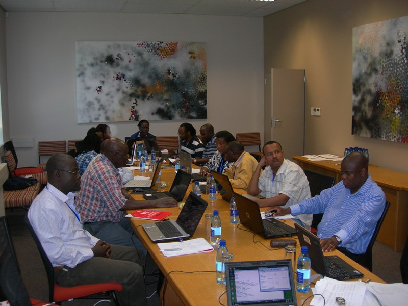

| free software platform for automated economic analysis |
Description
ADePT is a software platform for automated economic analysis, developed to automate and standardize the production of analytical reports. ADePT uses micro-level data from various types of surveys, such as Household Budget Surveys, Demographic and Health Surveys and Labor Force Surveys to produce rich sets of tables and graphs for a particular area of economic research, dramatically reducing the time required for the production of analytical reports.
Installation
Before you install ADePT, please, read the following installation instructions.
Then download ADePT installation file.
Example data
Example data contains a number of data files and ADePT projects which can be used to explore the functionality of the software. They can be downloaded as a single archive.
Authors
ADePT core team of developers consists of:
- Michael Lokshin is a Lead Economist with the Office of the Chief Economist for Europe and Central Asia, having joined the team in June 2019. Previously, he was a Manager and Lead Economist in the Development Data Group (Survey Unit). Michael has been involved in the Bank's efforts to develop global public goods for applied economic analysis and data collection. He led a team of researchers, survey experts and software engineers in the development of the Cloud for Development platform, Survey Solutions CAPI/CAWI system for data collection, and the ADePT project (Software Platform for Automated Economic Analysis). He was also behind the creation of the Economic Research Computer Center in the World Bank. Michael's research focuses on the areas of poverty and inequality measurement, labor economics, and applied econometrics. He has co-authored eight books and more than 50 publications in leading economic journals. Michael holds a Masters in Physics from Moscow Institute of Physics and Technology and a Ph.D. in Economics from University of North Carolina at Chapel Hill.
- Sergiy Radyakin is a senior economist in the World Bank's Development Data Group. His research interests include new technology, automation and reproducible research. He is creating computational tools for applied economic analyses based on survey data, primarily in the field of poverty and inequality analysis, statistical modeling and simulation, data management and visualization. He is an active developer of the ADePT software, a co-author of books on its use, and a facilitator of training sessions. Sergiy is supporting development of the Survey Solutions software for survey management and data collection and its deployment in the Bank's projects and in collaboration with National Statistical Offices (NSOs) worldwide.
- Zurab Sajaia is a Senior Computational Economist in the World Bank's Development Data Group. His areas of expertise are in poverty and inequality measurement, applied econometrics, and social protection. More recently he has been focusing on developing software tools for Automated Economic Analysis (ADePT platform), as well as systems for electronic data collection and management (SurveySolutions).
|
| |
|
| |
|
|
Extended list of authors and contributors
Poverty:- Martin Ravallion/ DECRG
- Pierella Paci/ PREMPR
- Catalina Gutierrez
- Paul Cichello/ PREMPR
- Pierella Paci/ PRMVP
- Josefina Posadas/ PRMGE
- Emil Tesliuc/ HDNSP
- Phillippe Leite/ HDNSP
- Emilio Porta/ HDNED
- Harry Patrinos/ HDNED
- Francisco Ferreira/ DECRG
- Adam Wagstaff/ DECHD
- Marcel Bilger
- Carolina Sanchez-Paramo/PRMPR
- Ambar Narayan/PRMPR
- Sergio Olivieri/PRMPR
Contact
Send inquiries by email to adept@worldbank.org
Documentation
Quick reference
Video tutorials
Please visit and subscribe to our YouTube channel
Books
Streamlined Analysis with ADePT Software is a series of books dedicated to documenting the best practices of economic analysis of various topics with ADePT software. The books cover the problematics, theoretical foundations and methodology, program settings, and results interpretation. The examples included in the books help illustrate common practical situations and aide in understanding the output and formulating policy recommendations.
You can read any of the books below online for free. (Click on the book cover to read it on-line).
You can download any of the books below in full-text for free. (Click on the corresponding link to download in PDF).
Measuring the Effectiveness of Social Protection
Measuring Gender Equality
Gender equality is a core development objective in its own right and also smart development policy and business practice. No society can develop sustainably without giving men and women equal power to shape their own lives and contribute to their families, communities, and countries. And yet, critical gender gaps continue to exist in all countries and across multiple dimensions. The gender module of the World Bank's ADePT software platform produces a comprehensive set of tables and graphs using household surveys to help diagnose and analyze the prevailing gender inequalities at the country level and over time. This book provides a step-by-step guide to the use of the ADePT software and an introduction to its basic economic concepts and econometric methods. The module is organized around the framework proposed by the World Development Report 2012: Gender Equality and Development. It covers gender differences in outcomes in three primary dimensions of gender equality: human capital (or endowments), economic opportunities, and voice and agency. Particular focus is given to the analysis and decomposition techniques that allow for further exploring of gender gaps in economic opportunities.
April 2017. (ISBN: 978-1-4648-0775-6) |
Key Labor Market Indicators: Analysis with Household Survey Data
Key Labor Market Indicators: Analysis with Household Survey Data is an introduction to labor market indicator analysis and a guide for analyzing household survey data using the ADePT ILO (International Labour Organization) Labor Market Indicators Module. The analytical framework and approach taken up in this book are based on the ILO's Key Indicators of the Labour Market (KILM). KILM indicators provide a strong basis on which to address key questions related to productive employment and decent work. The ADePT ILO Labor Market Indicators Module is a powerful tool for producing and analyzing KILM indicators using household survey data. The software allows researchers and practitioners to automate data production, to minimize data production errors, and to quickly produce a wide range of labor market data from labor force surveys or other household surveys that contain labor market information.
October 2016. (ISBN: 978-1-4648-0784-8) |
Simulating Distributional Impacts of Macro-dynamics : Theory and Practical Applications
Simulating Distributional Impacts of Macro-dynamics: Theory and Practical Applications is a comprehensive guide for analyzing and understanding the effects of macroeconomic shocks on income and consumption distribution, as well as using the ADePT Simulation Module. Since real-time micro data is rarely available, the Simulation Module (part of the ADePT economic analysis software) takes advantage of historical household surveys to estimate how current or proposed macro changes might impact household and individuals welfare. Using examples from different economic and social contexts, the book explains macro-micro linkages in an easy and intuitive way. After developing a sound theoretical foundation, readers are then shown how to explore their own scenarios using the Simulation Module. Step-by-step instructions illustrate data entry and show how to make adjustments using the Module's options. Exercises present how different sections of the simulation process operate independently. This book will be a valuable reference for analysts needing to evaluate the potential impact of structural reforms and to generate projections for hypothetical scenarios. Results created by the Simulation Module will be helpful in informing governmental policymaking. Download full text in PDF from the Open Knowledge Repository. September 2014. (ISBN: 978-1-4648-0384-0) |
Analyzing Food Security Using Household Survey Data
This book describes Food Security Module of ADePT (stand-alone software available for free downloading). The software was developed to produce a suite of indicators necessary to describe food insecurity in all its dimensions, based on food consumption data collected in household surveys. These indicators, derived at the national and subnational levels, include the consumption of calories and macronutrients, the availability of micronutrients and amino acids, the distribution of calories and the proportion of people undernourished. The book embodies decades of experience in analyzing food security and focuses on the theory, methodology, and analysis of these indicators. Download full text in PDF from the Open Knowledge Repository. April 2014. (ISBN: 978-1-4648-0133-4) |
ADePT User Guide
ADePT software enables users to analyze microdata—from sources such as household surveys—and generate print-ready, standardized tables and charts. It can also be used to simulate the impact of economic shocks, farm subsidies, cash transfers and other policy instruments on poverty, inequality and labor. The software automates the analysis, helps minimize human errors and encourages development of new economic analysis methods. ADePT supports datasets in Stata®, SPSS® and tab-delimited text formats. ADePT incorporates Numerics by Stata® (installed with ADePT) as its computational engine. Download full-text in PDF from this site. Mar 2013. |
A Unified Approach to Measuring Poverty and Inequality
A Unified Approach to Measuring Poverty and Inequality: Theory and Practice is an introduction to the theory and practice of measuring poverty and inequality, as well as a user's guide for analyzing income or consumption distribution for any standard household dataset using the World Bank's ADePT software. The approach taken here considers income standards as building blocks for basic measurement, then uses them to construct inequality and poverty measures. This unified approach provides advantages in interpreting and contrasting the measures and in understanding the way measures vary over time and space. Click on book cover to read it on-line. Or proceed to full-text download in PDF from the e-Library. Mar 2013. (ISBN: 978-0-8213-8461-9) |
Health Equity and Financial Protection
ADePT Health is a free-standing computer program that allows users to produce quickly - and with the minimal risk of errors - most tables that have become standard in applied health and equity analysis. ADePT produces summary statistics and charts that allow inequalities to be compared across countries and over time. This manual explains the methods ADePT uses, how to prepare data for it, how to navigate the ADePT interface to generate the desired tables and charts, and how to interpret them. Click on book cover to read it on-line. Or proceed to full-text download in PDF from the World Bank Documents & Reports site. Alternatively full-text download in PDF is available from the Open Knowledge Repository May 2011. (ISBN: 978-0-8213-8459-6) |
Assessing Sector Performance and Inequality in Education
The objective of the manual is to assist education analysts and policy practitioners in their assesmment of education sector performance, internal efficiency, finance, and equity. It is a technical and analytical resource that takes full advantage of ADePT Education, a software tool that allows for the calculation of education indicators from micro-level data. It provides technical definitions of more than forty indicators and step-by-step instructions for the preparation and analysis of indicators of internal efficiency and inequality. It also assists users in the interpretation of results, the prioritization of policy issues, and in the generation of tables and graphs that can be used to bolster their own analysis. Click on book cover to read it on-line. Or proceed to full-text download in PDF from the open knowledge repository. July 2010. (ISBN: 978-0-8213-8458-9) |
Modules
ADePT has a modular structure with each module devoted to analysis of a particular topic. Below is the descriptive information for the released modules.
Poverty and Inequality
Poverty and Inequality module.Social Protection
ADePT SP examines how the beneficiaries and/or benefits of social protection programs are distributed across quintiles, deciles or other population groups. The software performs sensitivity analysis with different consumption counterfactuals; generates estimates with correct standard errors; and produces statistics that allow comparisons between survey and administrative data. It can also be used to simulate the distributional impact of new/restructured programs.
Examples
- Using example dataset with ADePT Social Protection Module
- adept_blg.dta Input Data (Stata 9.2 dataset format)
- project_sp.ini
Output reports
- Output of ADePT Social Protection module, pdf
- Output of ADePT Social Protection module, xls
Labor
ADePT Labor is an integrated set of programs that produces tables and charts for the analysis of labor markets mainly in low- and middle-income countries.
The program allows to carry out standard labor analysis and the role of jobs and employment in transmitting the benefits of growth to the poor. ADePT Labor covers: (a) Labor market performance and structure; (b) Inequalities in the labor market; (c) poverty and labor markets (d) disadvantaged groups in the labor market. Each of these sub-themes is a separate module in ADePT labor, so the analyst can choose to produce all the tables in ADePT labor or just the subset corresponding to each module. Specific definitions of the indicators have been refined based on presentations, training, and pilot studies conducted in several countries including Bangladesh, Brazil, Egypt, Ghana, Jordan, Madagascar, Morocco, and Senegal.
Documentation
- ADEPT Labor Hand-Out
Examples
Input Data (Stata 9.2 dataset format)- Using example dataset with ADePT Labor Module
- Dataset
- Project file
Output reports
- Output file for ADePT Labor Module, pdf
- Output file for ADePT Labor Module, xls
Gender
ADePT Gender produces tables and graphs using household surveys to help diagnose and analyze gender inequalities. ADePT Gender is organized around the framework proposed by the World Development Report 2012 on Gender Equality and Development.
The Module covers gender differences in outcomes in the three primary dimensions of gender equality: human capital (or endowments), economic opportunities and voice and agency. Outcomes are disaggregated by gender and by population groups such as sex of household head, age groups, place of residence, and income. This diagnostic not only helps to profile a country in terms of gender equality, but also facilitates a better understanding of the gender dimensions of poverty. This should help make mainstreaming gender analysis standard practice in poverty and labor diagnosis.
Examples
Input Data (Stata 9.2 dataset format)- Using example dataset with ADePT Gender Module
- adept_ex.dta
- gender.adept
Output reports
- Output file for ADePT Gender Module, pdf
- Output file for ADePT Gender Module, xls
Health
ADePT Health allows users to produce quickly and with a minimal risk of errors most tables that have become standard in applied health equity analysis. ADePT's tables are in a standardized format and are based on a set of methods that are widely accepted in the literature. However, ADePT Health also allows considerable flexibility in terms of specific assumptions. Through its standardized tables, ADePT Health facilitates comparisons of health equity over time within and between countries.
ADePT Health uses the methods outlined in Analyzing Health Equity Using Household Survey Data: A Guide to Techniques and Their Implementation (Washington DC, World Bank, 2008) by Owen O'Donnell, Eddy van Doorslaer, Adam Wagstaff and Magnus Lindelow. Copies of the book can be ordered online or downloaded for free from http://www.worldbank.org/analyzinghealthequity, where Powerpoint self-teaching tutorials on health equity methods are ALSO available for download, along with customizable Stata do files for analysts who are comfortable with Stata programming. ADePT Health will appeal to the health equity analyst who wants to focus on data-preparation, interpreting results, and thinking about policy implications, rather than on Stata programming. ADePT Health dramatically reduces the time taken to prepare standard health equity tables, and makes more widely accessible all the methods covered in Analyzing Health Equity.
ADePT's Health Financing module covers:
- Progressivity of health care finance - chapter 16 of Analyzing Health Equity
- Redistributivity of health care finance - chapter 17
- Catastrophic out-of-pocket payments - chapter 18
- Poverty and out-of-pocket payments - chapter 19
ADePT's Health Outcomes module covers:
- Inequalities in health - chapters 5, 7-9 and 13 of Analyzing Health Equity
- Inequity in health utilization - chapter 15
- Benefit incidence analysis - chapter 14
Education
ADePT Education was developed as a joint effort of EdStats and DECRG. The purpose of this new tool is to pull common educational indicators out of microlevel survey data and present it in a print-ready form, facilitating further analysis by researchers. Using ADePT, a researcher can access over 15 predefined tables that present information on over 30 educational indicators. These indicators are disaggregated by such categories as level of education, gender, area of residence (urban/rural), household wealth, and the gender and educational level of household head. Tables are also grouped into categories: school participation, progression, attainment, and education expenditures. ADePT Education also provides 30 graphs on educational attainment and enrollment. ADePT Education Indicator Definitions.
Examples
- Using example dataset with ADePT Education Module
- adept_blg.dta Input Data (Stata 9.2 dataset format)
- adept_education.ini
Output reports
- Output file for ADePT Education Module, pdf
- Output file for ADePT Education Module, xls
Food Security
Since the end of the Second World War, the international community has been focusing on reducing the number and the proportion of people who suffer from hunger. Over time it became clear that no single indicator would provide a comprehensive picture of the food security situation. Rather, a suite of indicators is necessary to describe food insecurity in all its dimensions. The demand for evidence based policies, which brings together providers such as statistical offices and users of food security indicators including policy makers and researchers, has also been increasing. The ADePT-Food Security Module (ADePT-FSM) was developed to produce food security indicators from food consumption data collected in household surveys (HS). These indicators include the consumption of calories and macronutrients, the availability of micronutrients and amino acids, the distribution of calories and the proportion of people undernourished.
ADePT-FSM requires four datasets. Three of them contain data extracted from the original HS files, including household and household members' characteristics, and quantities and monetary values of food commodities consumed by households. The fourth datasets contains calorie and nutrients conversion factors extracted from national/regional Food Composition Tables.
The food security indicators are derived at the national and subnational levels such as by region, area of residence or household heads' characteristics. ADePT-FSM also produces statistics by group of food items and at the food item level. Some National Food Insecurity Reports are available at http://www.fao.org/economic/ess/ess-fs/fscapdev/essfscd/en/
Examples
Input Data
- All microdata files (Stata format) and ADePT project files in a compressed archive.
Output reports (including micronutrients analysis)
- Output of ADePT Food Security module, pdf
- Output of ADePT Food Security module, xls
Output reports (excluding micronutrients analysis)
- Output of ADePT Food Security module, pdf
- Output of ADePT Food Security module, xls
Agriculture (Crops and Livestock)
ADePT Agriculture was developed to facilitate the computation and production of agricultural statistics and indicators from household and farm survey data. It generates print-ready tables that describe the characteristics of the agricultural sector, and the factors that affect agricultural productivity. ADePT Agriculture is designed for use with household level data, but can be equally used with data from surveys that sample farms rather than households. ADePT Agriculture consists of two modules focusing respectively on crops and livestock.
The tool is intended for use by policy analysts, agricultural ministries staff, NGOs and international organizations and researchers interested in getting a better understanding of the farm household economy. By making it simpler and faster to produce analytical reports, ADePT Agriculture frees up resources for the interpretation of results, and facilitates using data to design evidence based policies and investments. By making the analysis easier and faster for a wider range of users, ADePT Agriculture can also increase the demand for and utilization of new and existing household survey data.
ADePT Agriculture was developed in cooperation with the Food and Agriculture Organization of the United Nations (FAO).
Crops
The ADePT Agriculture - Crops module employs user provided data to produce information of relevance to key domains of agricultural policy analysis. In particular the module generate tables on farm structures, land use, tenancy arrangement status, by regions and over expenditure and land quintiles. It also generates tables on land quality features, the use of agricultural inputs and services, crop production and income, and constraints to crop production.
Crops module documentation
Examples
Input data
Output reports
- Crops Example Output
Livestock
The ADePT Agriculture - Livestock module facilitates the computation and analysis of livestock statistics and indicators from household survey data. Livestock contribute in multiple ways to household's livelihoods, including through the provision of cash income, food, manure, draft power and hauling services, savings and insurance and social status. The Livestock module automates and standardizes the analysis of survey data and the production of analytical tables on the livestock sector. ADePT Agriculture - Livestock generates a set of tables that describe the key characteristics of the livestock sector and its relationship to household livelihoods.
Livestock module documentation
- Livestock User's Guide
- Livestock Quick Start Guide
Examples
- Using example dataset with ADePT Livestock Module
Input data
- Products data
- Household data
- Animals data
- Animal coefficients
- ADePT Agriculture (livestock) example project
Output reports
- Livestock Example Output
Seminars
Seminars map|  |
Venue: Honiara, Solomon Islands Date: March 2013 Title: Poverty Analysis with ADePT Presenters: S. Radyakin Countries: Solomon Islands Participants: National Statistical Office, Central Bank |